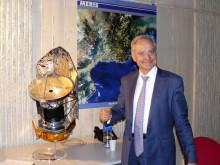

Please note: the AAS Obituaries are temporarily being hosted on this website while their full content is being ingested into the PubPub publishing platform newly adopted by the Bulletin of the American Astronomical Society. When the migration is complete, your existing links will take you to the final, migrated content. Contact peter.williams@aas.org with any questions.
André Brahic (1942-2016)
André Brahic, an astrophysicist with the French Alternative Energies and Atomic Energy Commission (CEA) and a specialist in the solar system and its formation, died of cancer on 15 May 2016 at age 73. Born in Nazi-occupied Paris on 30 November 1942, Brahic studied under Évry Schatzman at France’s Institut d’Astrophysique in the late 1960s before taking up a research position at the Paris Observatory in Meudon . Brahic published a series of papers in the 1970s detailing the results of numerical studies of a gravitating system of colliding particles, including the formation and dynamics of particulate disks, planetary rings, and the solar system itself.
In June 1977, Brahic and his colleagues presented evidence for the existence of rings around Uranus, based on observations of the occultation of the star SAO 158687. In addition to the primary occultation of the star by the planet, twenty-two secondary occultations were recorded. The symmetry of these occultations with respect to the planet implied the presence of either a disk composed of large particles or multiple rings of small particles. [ La Recherche , 8 (June 1977) 569-571] (The definitive proof of Uranus’s rings is credited to the observations of J. L. Elliot, E. Dunham, and D. Mink from the Kuiper Airborne Observatory, reported in a May 1977 letter to Nature .)
In 1985, William Hubbard, Andre Brahic, and their associates announced the detection of five ring segments around Neptune, approximately 67,000 km from the planet, according to photoelectric observations of an occultation made the previous year at Cerro Tololo Inter-American Observatory. Brahic proposed naming the denser arcs Liberté, Égalité, and Fraternité, in tribute to the motto of the French Republic. [Lunar and Planetary Science. XVI (1985) 368-369.]
Brahic was a vocal advocate of space exploration, explaining to both professional and general audiences the scientific rationale behind interplanetary missions. He participated in the Voyager mission to Jupiter and the outer planets and the Cassini-Huygens mission to Saturn. In the late 1970s, he conducted a feasibility study of a multiple flyby mission among objects in the asteroid belt.
Brahic was a well-known science popularizer, having written several books for the French-speaking audience, including his last, Worlds Elsewhere — Are We Alone , published in 2015. One of Brahic’s frequent lecture venues, Cité de l'Espace Toulouse, noted the energetic spirit of his public presentations: “A true showman, he discussed his slides using many anecdotes which, in addition to an often devastating humour, also outlined the story of science, transforming it into a human saga that would captivate the audience. He was always quick to denounce obscurantism, presenting the scientific process as the antidote to beliefs and superstitions, while sweeping aside pessimism and defending the idea of a brilliant future based on research and knowledge.” In 1990, asteroid 3488 was named in Brahic’s honor.
Photo credit: Guy Lebègue
Obituary written by: Alan Hirshfeld (UMass Darthmouth)
Additional links: